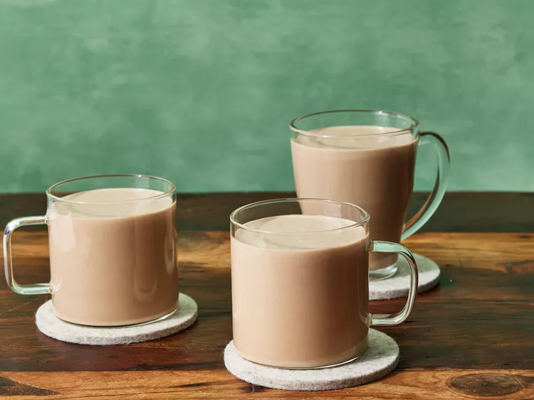

← Irish Cream

Ingredients
- 1 (14 ounce) can sweetened condensed milk
- 1 ⅔ cups Irish whiskey
- 1 cup heavy cream
- 2 tablespoons chocolate syrup
- 1 teaspoon instant coffee granules
- 1 teaspoon vanilla extract
- 1 teaspoon almond extract
Method
- Gather all ingredients.
- Combine sweetened condensed milk, Irish whiskey, heavy cream, chocolate syrup,
coffee granules, vanilla, and almond extract in a blender. Blend on high speed
until incorporated, 20 to 30 seconds. Store in a tightly sealed container in
the refrigerator.
- Shake well before serving.
You can access the authentic recipe website link
here.